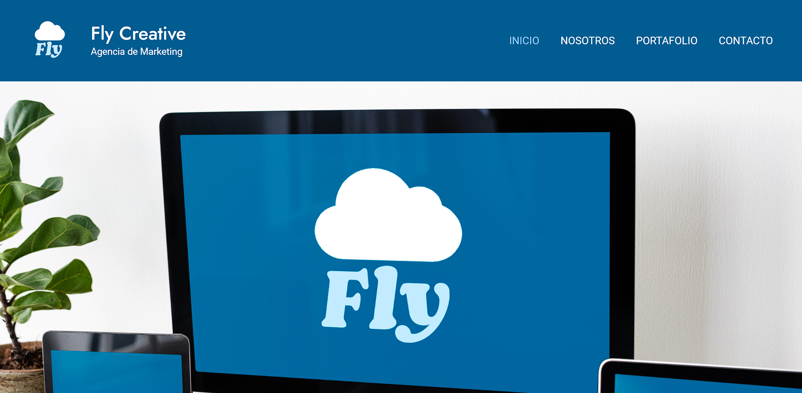
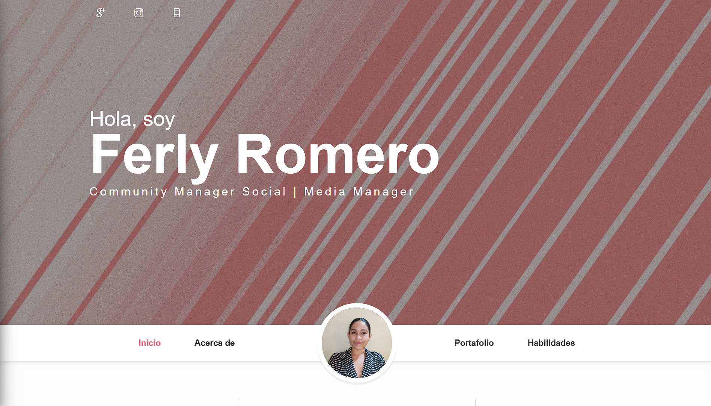

Proyectos
Página Corporativa
Fly Creative es una agencia de marketing digital que optimiza la presencia en línea de las marcas a través de estrategias personalizadas en redes sociales. Su equipo experto trabaja para crear experiencias digitales memorables que impulsan el éxito y el crecimiento de sus clientes.
Portafolio
Portafolio profesional para una Community Manager y Social Media Manager.Se presenta información sobre su experiencia, habilidades técnicas, y proyectos destacados. Además contiene link de contacto y botón de descarga de su currículum.
Clon de Amazon

Replica del sitio web Amazon con fines de demostrar conocimientos en html y css. Utiliza el mismo diseño y contenido y que Amazon. Es un proyecto de aprendizaje, que no pretende competir ni infringir los derechos de amazon.